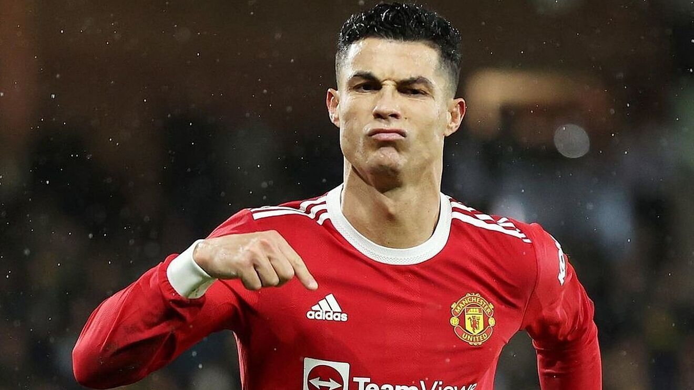
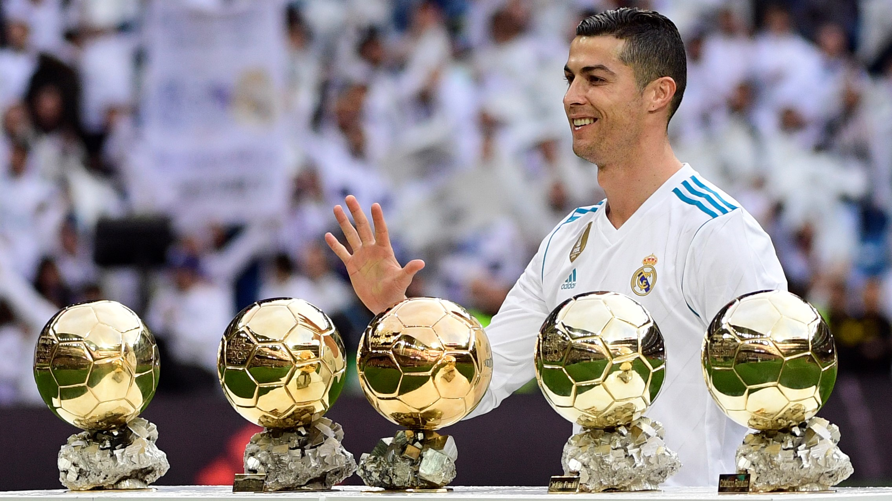
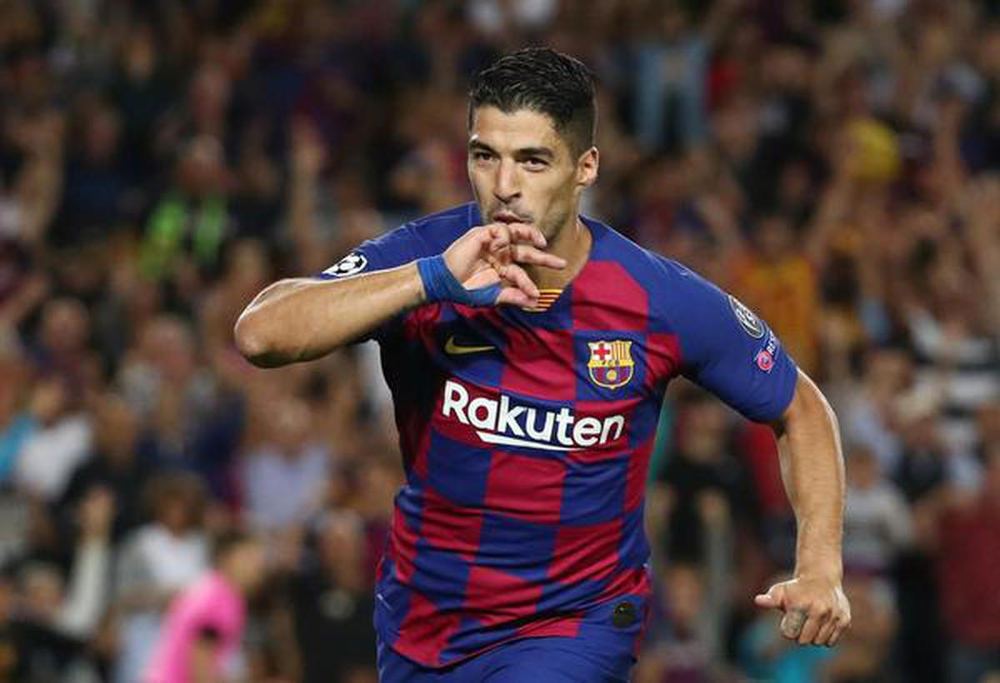
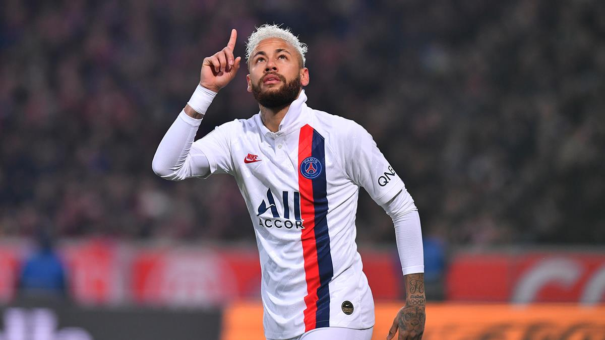
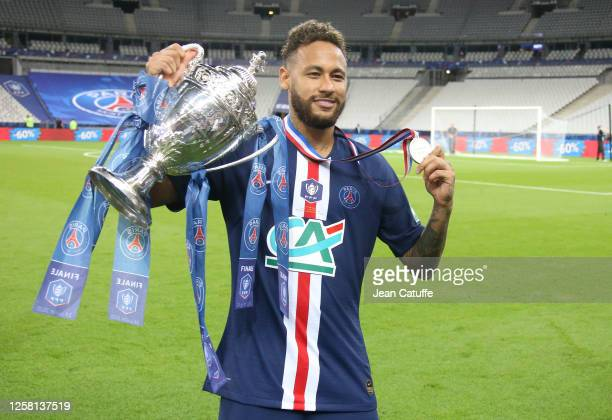

Lionel Messi

( The only player who won "7" ballon d'Or in the history of football )
Lionel Andrés Messi ; born 24 June 1987, also known as Leo Messi, is an Argentine professional footballer who plays as a forward for Ligue 1 club Paris Saint-Germain and captains the Argentina national team. Often considered the best player in the world and widely regarded as one of the greatest players of all time, Messi has won a record seven Ballon d'Or awards, a record six European Golden Shoes, and in 2020 was named to the Ballon d'Or Dream Team. Until leaving the club in 2021, he had spent his entire professional career with Barcelona, where he won a club-record 35 trophies, including ten La Liga titles, seven Copa del Rey titles and four UEFA Champions Leagues. A prolific goalscorer and creative playmaker, Messi holds the records for most goals in La Liga (474), a La Liga and European league season (50), most hat-tricks in La Liga (36) and the UEFA Champions League (8), and most assists in La Liga (192), a La Liga season (21) and the Copa América (17). He also holds the record for most international goals by a South American male (86). Messi has scored over 750 senior career goals for club and country, and has the most goals by a player for a single club.
Born and raised in central Argentina, Messi relocated to Spain to join Barcelona at the age of 13, for whom he made his competitive debut aged 17 in October 2004. He established himself as an integral player for the club within the next three years, and in his first uninterrupted season in 2008–09 he helped Barcelona achieve the first treble in Spanish football; that year, aged 22, Messi won his first Ballon d'Or. Three successful seasons followed, with Messi winning four consecutive Ballons d'Or, making him the first player to win the award four times and in a row.[10] During the 2011–12 season, he set the La Liga and European records for most goals scored in a single season, while establishing himself as Barcelona's all-time top scorer. The following two seasons, Messi finished second for the Ballon d'Or behind Cristiano Ronaldo (his perceived career rival), before regaining his best form during the 2014–15 campaign, becoming the all-time top scorer in La Liga and leading Barcelona to a historic second treble, after which he was awarded a fifth Ballon d'Or in 2015. Messi assumed captaincy of Barcelona in 2018, and in 2019 he won a record sixth Ballon d'Or. Out of contract, he signed for Paris Saint-Germain in August 2021.
An Argentine international, Messi holds the national record for appearances and is also the country's all-time leading goalscorer. At youth level, he won the 2005 FIFA World Youth Championship, finishing the tournament with both the Golden Ball and Golden Shoe, and an Olympic gold medal at the 2008 Summer Olympics. His style of play as a diminutive, left-footed dribbler drew comparisons with his compatriot Diego Maradona, who described Messi as his successor. After his senior debut in August 2005, Messi became the youngest Argentine to play and score in a FIFA World Cup in 2006, and reached the final of the 2007 Copa América, where he was named young player of the tournament. As the squad's captain from August 2011, he led Argentina to three consecutive finals: the 2014 FIFA World Cup, for which he won the Golden Ball, and the 2015 and 2016 Copa América, winning the Golden Ball in the 2015 edition. After announcing his international retirement in 2016, he reversed his decision and led his country to qualification for the 2018 FIFA World Cup, a third-place finish at the 2019 Copa América, and won the 2021 Copa América, while winning the Golden Ball and Golden Boot award for the latter. This achievement would see him receive a record seventh Ballon d'Or in 2021.
Messi has endorsed sportswear company Adidas since 2006. According to France Football, he was the world's highest-paid footballer for five years out of six between 2009 and 2014, and was ranked the world's highest-paid athlete by Forbes in 2019 and 2022.Messi was among Time's 100 most influential people in the world in 2011 and 2012. In February 2020, he was awarded the Laureus World Sportsman of the Year, thus becoming the first footballer and the first team sport athlete to win the award. Later that year, Messi became the second footballer (and second team-sport athlete) to surpass $1 billion in career earnings.
player achievements

Barcelona
La Liga:
2004–05, 2005–06, 2008–09, 2009–10, 2010–11, 2012–13, 2014–15, 2015–16, 2017–18, 2018–19
Copa del Rey:
2008–09, 2011–12, 2014–15, 2015–16, 2016–17, 2017–18, 2020–21
Supercopa de España:
2006, 2009, 2010, 2011, 2013, 2016, 2018
UEFA Champions League:
2005–06, 2008–09, 2010–11, 2014–15
UEFA Super Cup:
2009, 2011, 2015
FIFA Club World Cup:
2009, 2011, 2015
Paris Saint-Germain
Ligue 1:
2021–22
Trophée des Champions:
2022
Argentina U20
FIFA World Youth Championship:
2005
Argentina U23
Summer Olympics:
2008
Argentina
Copa América:
2021;
runner-up:
2007, 2015, 2016
FIFA World Cup runner-up:
2014
CONMEBOL–UEFA Cup of Champions:
2022
Individual
Ballon d'Or/FIFA Ballon d'Or:
2009, 2010, 2011, 2012, 2015, 2019, 2021
FIFA World Player of the Year:
2009
The Best FIFA Men's Player:
2019
European Golden Shoe:
2009–10, 2011–12, 2012–13, 2016–17, 2017–18, 2018–19
FIFA World Cup Golden Ball:
2014
FIFA Club World Cup Golden Ball:
2009, 2011
Laureus World Sportsman of the Year:
2020
La Liga Best Player:
2008–09, 2009–10, 2010–11, 2011–12, 2012–13, 2014–15
Pichichi Trophy:
2009−10, 2011–12, 2012−13, 2016–17, 2017−18, 2018–19, 2019–20, 2020–21
Argentine Footballer of the Year:
2005, 2007, 2008, 2009, 2010, 2011, 2012, 2013, 2015, 2016, 2017, 2019, 2020, 2021
Cristiano Ronaldo

Cristiano Ronaldo dos Santos Aveiro ; born 5 February 1985 is a Portuguese professional footballer who plays as a forward for Premier League club Manchester United and captains the Portugal national team. Often considered the best player in the world and widely regarded as one of the greatest players of all time, Ronaldo has won five Ballon d'Or awards and four European Golden Shoes, the most by a European player. He has won 32 trophies in his career, including seven league titles, five UEFA Champions Leagues, and the UEFA European Championship. Ronaldo holds the records for most appearances (183), goals (140), and assists (42) in the Champions League, goals in the European Championship (14), international goals (117), and international appearances by a European (189). He is one of the few players to have made over 1,100 professional career appearances, and has scored over 800 official senior career goals for club and country.
Ronaldo began his senior career with Sporting CP, before signing with Manchester United in 2003, aged 18, winning the FA Cup in his first season. He would also go on to win three consecutive Premier League titles, the Champions League and the FIFA Club World Cup; at age 23, he won his first Ballon d'Or. Ronaldo was the subject of the then-most expensive association football transfer when he signed for Real Madrid in 2009 in a transfer worth €94 million (£80 million), where he won 15 trophies, including two La Liga titles, two Copa del Rey, and four Champions Leagues, and became the club's all-time top goalscorer. He won back-to-back Ballons d'Or in 2013 and 2014, and again in 2016 and 2017, and was runner-up three times behind Lionel Messi, his perceived career rival. In 2018, he signed for Juventus in a transfer worth an initial €100 million (£88 million), the most expensive transfer for an Italian club and for a player over 30 years old. He won two Serie A titles, two Supercoppe Italiana, and a Coppa Italia, before returning to United in 2021.
Ronaldo made his international debut for Portugal in 2003 at the age of 18 and has since earned over 180 caps, making him Portugal's most-capped player. With more than 100 goals at international level, he is also the nation's all-time top goalscorer. Ronaldo has played in and scored at 11 major tournaments; he scored his first international goal at Euro 2004, where he helped Portugal reach the final. He assumed captaincy of the national team in July 2008. In 2015, Ronaldo was named the best Portuguese player of all time by the Portuguese Football Federation. The following year, he led Portugal to their first major tournament title at Euro 2016, and received the Silver Boot as the second-highest goalscorer of the tournament. He also led them to victory in the inaugural UEFA Nations League in 2019, and later received the Golden Boot as top scorer of Euro 2020.
One of the world's most marketable and famous athletes, Ronaldo was ranked the world's highest-paid athlete by Forbes in 2016 and 2017 and the world's most famous athlete by ESPN from 2016 to 2019. Time included him on their list of the 100 most influential people in the world in 2014. He is the first footballer and the third sportsman to earn US$1 billion in his career.
player achievements

Sporting CP
Supertaça Cândido de Oliveira:
2002
Manchester United
Premier League:
2006–07, 2007–08, 2008–09
FA Cup:
2003–04
Football League Cup:
2005–06, 2008–09
FA Community Shield:
2007
UEFA Champions League:
2007–08
FIFA Club World Cup:
2008
Real Madrid
La Liga:
2011–12, 2016–17
Copa del Rey:
2010–11, 2013–14
Supercopa de España:
2012, 2017
UEFA Champions League:
2013–14, 2015–16, 2016–17, 2017–18
UEFA Super Cup:
2014, 2017
FIFA Club World Cup:
2014, 2016, 2017
Juventus
Serie A:
2018–19, 2019–20
Coppa Italia:
2020–21
Supercoppa Italiana:
2018, 2020
Portugal
UEFA European Championship:
2016
UEFA Nations League:
2018–19
Individual
Ballon d'Or/Ballon d'Or:
2008, 2013, 2014, 2016, 2017
FIFA World Player of the Year:
2008
The Best FIFA Men's Player:
2016, 2017
The Best FIFA Special Award for Outstanding Career Achievement:
2021
European Golden Shoe:
2007–08, 2010–11, 2013–14, 2014–15
FPF Portuguese Player of the Year:
2016, 2017, 2018, 2019
PFA Players' Player of the Year:
2006–07, 2007–08
Premier League Player of the Season:
2006–07, 2007–08
Premier League Golden Boot:
2007–08
La Liga Best Player:
2013–14
Pichichi Trophy:
2010–11, 2013–14, 2014–15
Serie A Footballer of the Year:
2019, 2020
Capocannoniere:
2020–21
Luis Suárez

Luis Alberto Suárez Díaz ; born 24 January 1987 is a Uruguayan professional footballer who plays as a striker for Uruguayan Primera División club Nacional and the Uruguay national team. Nicknamed El Pistolero ('The Gunman'), he is known for his passing, finishing and comfort with the ball. Suárez is regarded as one of the best players of his generation and one of the greatest strikers of all time. Suárez has won two European Golden Shoes, an Eredivisie Golden Boot, a Premier League Golden Boot, and the Pichichi Trophy. He has scored over 500 career goals for club and country.
Suárez began his senior club career at Nacional in 2005. At age 19, he signed for Groningen, before transferring to Ajax in 2007. There, he won the KNVB Cup. In 2011, Suárez signed for Premier League club Liverpool, and won the League Cup in his first full season. In 2014, he equalled the goalscoring record for a 38-game Premier League season and won his first European Golden Shoe. That summer, Suárez moved to Barcelona in a transfer worth £64.98 million (€82.3 million), making him one of the most expensive players.
Dubbed MSN, Suárez was part of a dominant trio alongside Lionel Messi and Neymar, winning the treble of La Liga, the Copa del Rey and the UEFA Champions League in his first season. In his second season, he won the Pichichi Trophy and his second European Golden Shoe, becoming the first player since 2009 to win both awards other than Messi or Cristiano Ronaldo. He also led La Liga in assists, becoming the first player to do so in both goals and assists in league history. With Barcelona, Suárez won ten additional trophies, including three La Liga titles and three Copas del Rey. He signed for Atlético Madrid in 2020, winning his fifth La Liga title in his debut season.
At international level, Suárez is Uruguay's all-time leading goalscorer, and has represented his nation at three editions of the FIFA World Cup and four editions of the Copa América, as well as the 2012 Summer Olympics and the 2013 FIFA Confederations Cup. He was named in the 2010 World Cup All-Star Team and won the 2011 Copa América, where he was awarded Best Player. Outside of his football credentials, Suárez has been a source of controversy throughout his career, including a goal-line handball against Ghana at the 2010 FIFA World Cup, biting opponents on three occasions
player achievements

Nacional
Primera División: 2005–06
Ajax
Eredivisie: 2010–11
KNVB Cup: 2009–10
Liverpool
Football League Cup: 2011–12
FA Cup runner-up: 2011–12
Barcelona
La Liga:
2014–15, 2015–16, 2017–18, 2018–19
Copa del Rey:
2014–15, 2015–16, 2016–17, 2017–18
Supercopa de España:
2016, 2018
UEFA Champions League:
2014–15
UEFA Super Cup:
2015
FIFA Club World Cup:
2015
Atlético Madrid
La Liga: 2020–21
Uruguay
Copa América:
2011
Individual
FIFA World Cup All-Star Team:
2010
Ajax Player of the Year (Rinus Michels Award):
2008–09, 2009–10
Dutch Footballer of the Year:
2009–10
Eredivisie Golden Boot:
2009–10
IFFHS World's Best Top Division Goalscorer:
2010, 2014, 2016
Copa América Best Player:
2011
Copa América Team Of The Tournament:
2011
PFA Team of the Year:
2012–13 Premier League, 2013–14 Premier League
Liverpool Player of the Season:
2012–13, 2013–14
Premier League Player of the Month:
December 2013, March 2014
Liverpool Players' Player of the Season:
2013–14
Liverpool Goal of the Season:
2013–14
PFA Players' Player of the Year:
2013–14
FWA Footballer of the Year:
2013–14
Premier League Player of the Season:
2013–14
Premier League Golden Boot:
2013–14
FSF Player of the Year:
2013–14
European Golden Shoe:
2013–14, 2015–16
Trofeo EFE:
2014–15,2020–21
UEFA Champions League Squad of the Season:
2014–15, 2015–16
ESM Team of the Year:
2013–14, 2014–15, 2015–16
FIFA Club World Cup Golden Ball:
2015
FIFA Club World Cup Golden Boot:
2015
FIFA Club World Cup MVP of the Final Match Trophy:
2015
La Liga Pichichi Trophy:
2015–16
Copa del Rey top scorer:
2015–16
La Liga Best World Player:
2015–16
Barcelona Player of the Season (Trofeo Aldo Rovira):
2015–16
UEFA La Liga Team of The Season:
2015–16, 2016–17
FIFA FIFPro World11:
2016
La Liga Player of the Month:
May 2016, December 2017, October 2018, December 2019
Trofeo Alfredo Di Stéfano:
2020–21
Neymar

Neymar da Silva Santos Júnior (born 5 February 1992), known as Neymar, is a Brazilian professional footballer who plays as a forward for Ligue 1 club Paris Saint-Germain and the Brazil national team. He is considered a versatile player, being able to play as either a central striker, second striker, winger or occasionally as an attacking midfielder. A prolific goalscorer and renowned playmaker, he is regarded as one of the best players in the world. Neymar has scored at least 100 goals for three different clubs, making him one of three players to achieve this.
Neymar came into prominence at Santos, where he made his professional debut aged 17. He helped the club win two successive Campeonato Paulista championships, a Copa do Brasil, and the 2011 Copa Libertadores; the latter being Santos' first since 1963. Neymar was twice named the South American Footballer of the Year, in 2011 and 2012, and soon relocated to Europe to join Barcelona. As part of Barcelona's attacking trio with Lionel Messi and Luis Suárez, dubbed MSN, he won the continental treble of La Liga, the Copa del Rey, and the UEFA Champions League. He then attained a domestic double in the 2015–16 season. Motivated to be a talisman at club level, Neymar transferred to PSG in 2017 in a move worth €222 million, making him the most expensive player ever. In France, he won four league titles, among other honours, and was voted Ligue 1 Player of the Year in his debut season.[13] Notably, he helped PSG attain a domestic quadruple in the 2019–20 season, and led the club to its first ever Champions League Final.
With 74 goals in 119 matches for Brazil since debuting at age 18, Neymar is the second highest goalscorer for his national team, trailing Pelé. At his youth stage for Brazil, he was a key player in the victory at the 2011 South American Youth Championship, where he finished as leading goalscorer, and also attained a silver medal in men's football at the 2012 Summer Olympics. The following year, he won the 2013 FIFA Confederations Cup, winning the Golden Ball. His participation in the 2014 FIFA World Cup and 2015 Copa América was cut short by injury and a suspension, respectively, before captaining Brazil to their first Olympic gold medal in men's football at the 2016 Summer Olympics. Having renounced the captaincy, he featured at the 2018 World Cup, and after missing the 2019 Copa América through injury, helped Brazil to a runner-up finish at the 2021 tournament.
Neymar finished third for the FIFA Ballon d'Or in 2015 and 2017, has been awarded the FIFA Puskás Award, has been named in the FIFA FIFPro World11 twice, the UEFA Team of the Year twice, and the UEFA Champions League Squad of the Season three times. Off the pitch, he ranks among the world's most prominent sportsmen. SportsPro named him the most marketable athlete in the world in 2012 and 2013, and ESPN cited him as the world's fourth-most famous athlete in 2016. In 2017, Time included him in its annual list of the 100 most influential people in the world. In 2018, France Football ranked Neymar the world's third highest-paid footballer. The following year, Forbes ranked him the world's third highest-paid athlete, dropping a spot to fourth in 2020.
player achievements

Santos
Campeonato Paulista:
2010, 2011, 2012
Copa do Brasil:
2010
Copa Libertadores:
2011
Recopa Sudamericana:
2012
Barcelona
La Liga:
2014–15, 2015–16
Copa del Rey:
2014–15, 2015–16, 2016–17
Supercopa de España:
2013
UEFA Champions League:
2014–15
FIFA Club World Cup:
2015
Paris Saint-Germain
Ligue 1:
2017–18,2018–19,2019–20, 2021–22
Coupe de France:
2017–18, 2019–20, 2020–21
Coupe de la Ligue:
2017–18,2019–20
Trophée des Champions:
2018,2020, 2022
Brazil U20
South American U-20 Championship:
2011
Brazil U23
Summer Olympics:
2016;
runner-up:
2012
Brazil
FIFA Confederations Cup:
2013
Copa América runner-up:
2021
Individual
Neymar with the Golden Ball award for best player at the 2013 Confederations Cup
Awards
Campeonato Brasileiro Série A Team of the Year:
2010, 2011, 2012
Chuteira de Ouro:
2010, 2011, 2012
Bola de Prata:
2010, 2011
Bola de Ouro:
2011
Campeonato Brasileiro Série A Best Player:
2011
World Soccer Young Player of the Year:
2011
Copa Libertadores Most Valuable Player:
2011
FIFA Club World Cup Bronze Ball:
2011
South American Footballer of the Year:
2011, 2012
FIFA Puskás Award:
2011
Bola de Ouro Hors Concours:
2012
FIFA Confederations Cup Golden Ball:
2013
FIFA Confederations Cup Bronze Shoe:
2013
FIFA Confederations Cup Dream Team:
2013
FIFA World Cup Bronze Boot:
2014
FIFA World Cup Dream Team:
2014
Samba Gold:
2014, 2015, 2017, 2020, 2021
UEFA Champions League Squad of the Season:
2014–15, 2019–20,2020–21
La Liga Best World Player:
2014–15
UNFP Ligue 1 Player of the Year:
2017–18
UNFP Ligue 1 Team of the Year:
2017–18,2018–19,2020–21
UEFA Team of the Year:
2015,2020
FIFA FIFPro World11:
2015, 2017
IFFHS Men's World Team:
2017
ESM Team of the Year:
2017–18
IFFHS CONMEBOL Team of the Decade:
2011–2020
Copa América Team of the Tournament:
2021
Performances
Copa do Brasil top scorer:
2010
South American U-20 Championship top scorer:
2011
Campeonato Paulista top scorer:
2012
Copa Libertadores top scorer:
2012 (tied with Matías Alustiza)
Copa Libertadores 2nd top assist provider:
2012
Copa del Rey top scorer:
2014–15
UEFA Champions League top scorer:
2014–15 (tied with Cristiano Ronaldo and Lionel Messi)
FIFA Club World Cup top assist provider:
2015
UEFA Champions League top assist provider:
2015–16, 2016–17